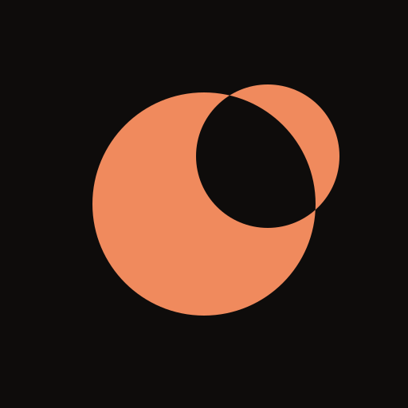
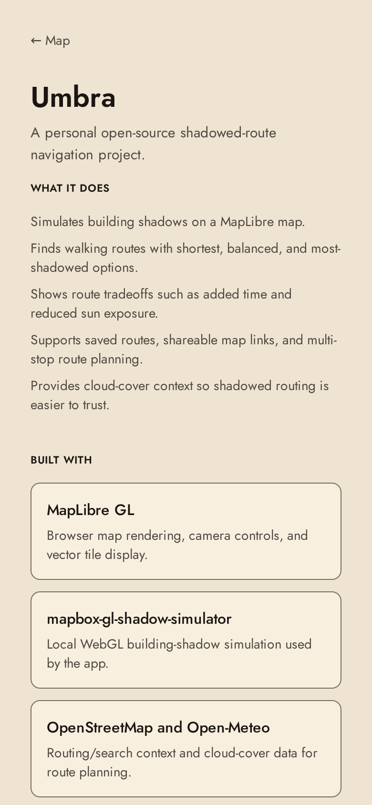
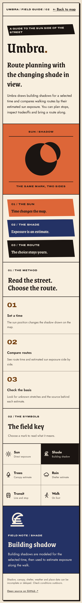

One mark
The sun with its shadow bite is shared by the app icon, selected-time marker, user-location marker and arrival stamp. The six field-key glyphs are original vector drawings.

Original sigils, recurring disc, verdict motion and the About poster. Switch theme and viewport below to compare the current main branch with this R9 branch.


The sun with its shadow bite is shared by the app icon, selected-time marker, user-location marker and arrival stamp. The six field-key glyphs are original vector drawings.
Route verdicts and the arrival verdict reveal in ink; the arrival badge stamps in. The existing motion registry runs these only when reduced motion is off.
The poster has bolder sun and shade plates, a wordmark that fits its panel, and a field key you can press to reveal each mark’s meaning. It reflows on phones and was captured in both themes.
For a live check of the six interactive field notes, start npm run dev in the R9 worktree and open /about. The screen captures are committed with this page so the artifact also works offline.